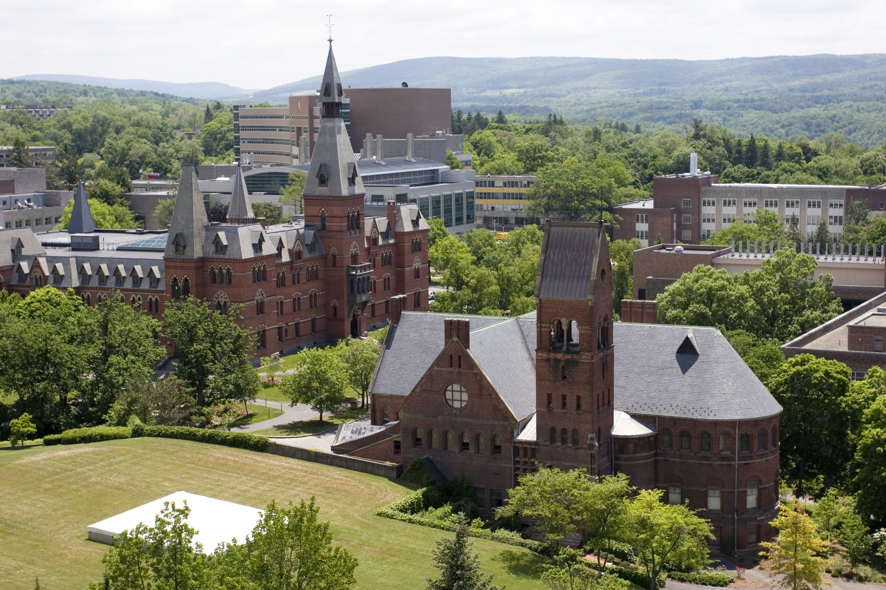
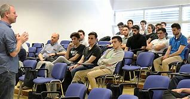
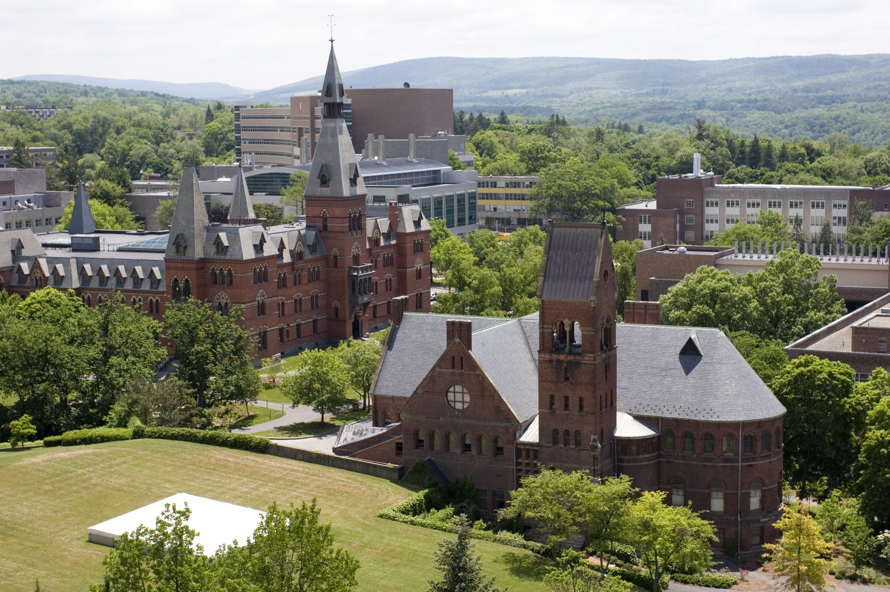
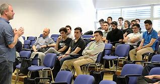

Campus Life at Misungwi University
Welcome to Campus Life
Student Life
At Misungwi University, student life is at the heart of everything we do. Our diverse student body is involved in a wide range of extracurricular activities, social clubs, and academic organizations. Campus life here is not just about academics—it's about building friendships, developing leadership skills, and creating lifelong memories. Here's a look at some of the exciting aspects of life on campus:
- Student clubs and societies, including debate, drama, music, and environmental clubs.
- Sports teams, with regular tournaments in football, basketball, and athletics.
- International student events, fostering a global community.
- Mentorship programs for academic and career development.
Campus Facilities
Misungwi University offers state-of-the-art facilities designed to enhance both academic and extracurricular pursuits. Our campus includes:
- Modern lecture halls equipped with the latest technology to support interactive learning.
- Research labs for students in fields like science, engineering, and technology.
- Library with a wide collection of books, journals, and digital resources to aid student research.
- Sports complex with a gym, sports fields, and courts for students to stay active.
- Recreational areas including cafes, lounges, and a student center for socializing and relaxation.
Events and Social Life
Misungwi University offers a lively calendar of events throughout the academic year. From academic conferences to fun social gatherings, our events are a great way to meet new people and experience campus life in full. Some of the most popular events include:
- Freshers' Week: A week dedicated to welcoming new students with fun activities, orientation, and meet-and-greets.
- Cultural Festivals: Celebrations showcasing the diverse cultures of our student body.
- Sports Tournaments: University-wide competitions, including inter-departmental football and basketball leagues.
- Annual Music Concerts: Featuring student performances and guest artists.
Campus Gallery
Here's a glimpse of what campus life looks like at Misungwi University. Check out some photos from our campus events, facilities, and daily student activities:
.jpg) 


